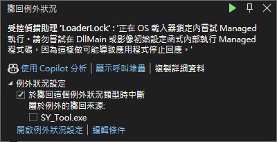
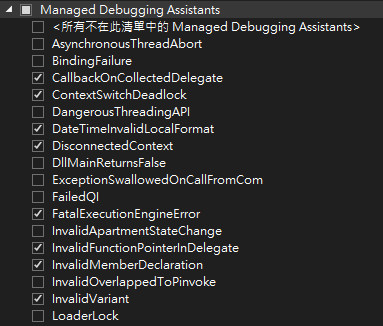

參考資訊：
https://stackoverflow.com/questions/56642/loader-lock-error
問題如下：
LoaderLock was detected Message: Attempting managed execution inside OS Loader lock. Do not attempt to run managed code inside a DllMain or image initialization function since doing so can cause the application to hang.

Debug => Windows => Exception Settings => Managed Debugging Assistants => LoaderLock
